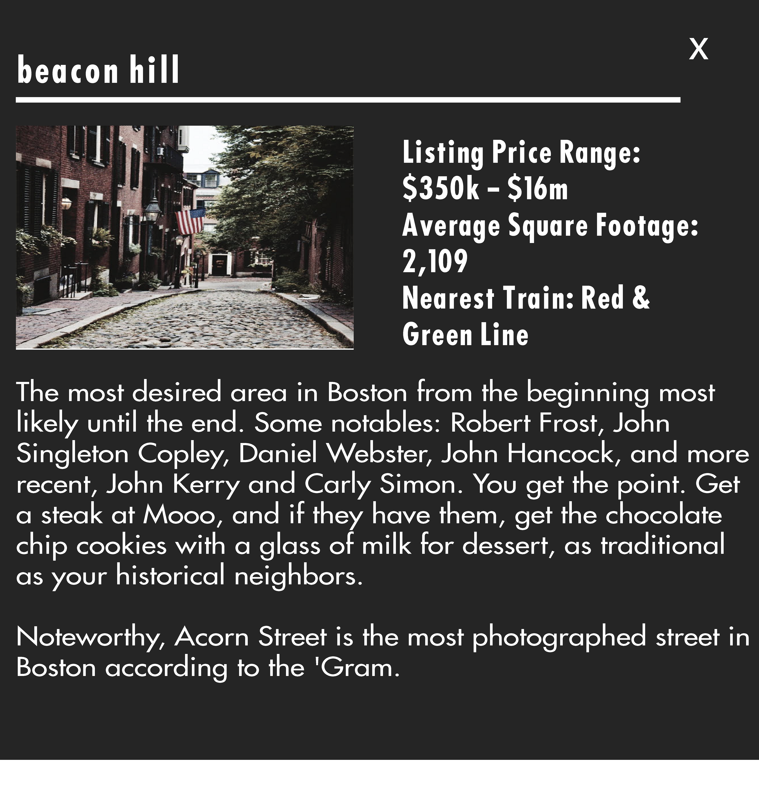
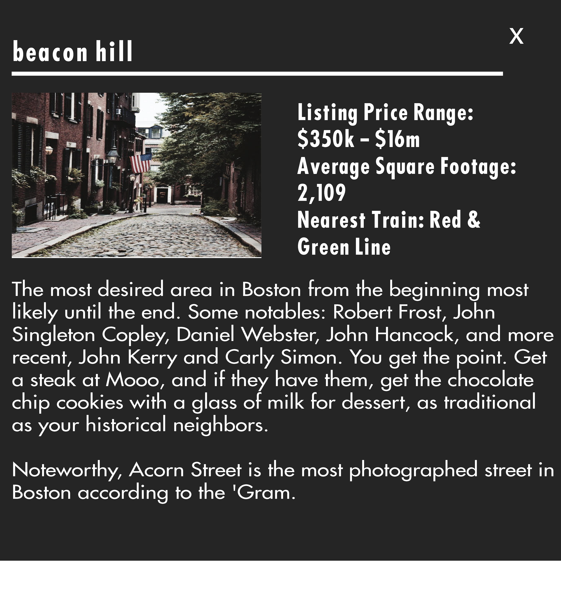
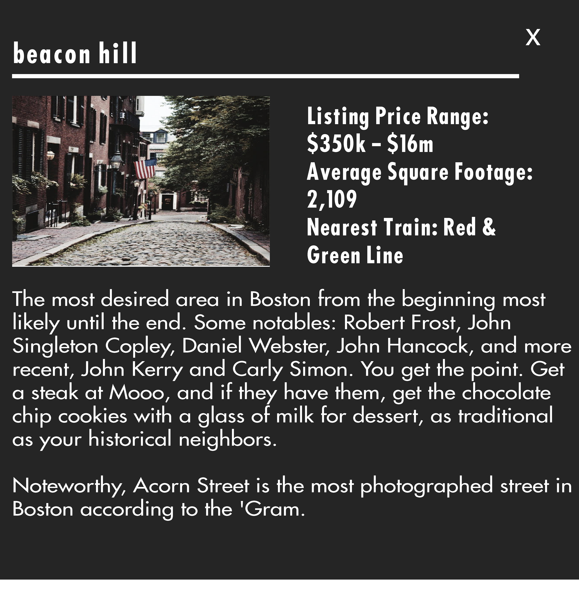

top floor lifestyle
Redline is not your typical brokerage firm. Yes we sell real estate,
but we more so consider ourselves conveyors of an urban lifestyle. From
your apartment or condo, down to the latest musician playing at a local spot.
Our agents are hand-picked. They not only know the ins and outs of the real estate
business but live, work and play in the city and can provide a complete scope of lifestyle.
Whatever your vibe we’ve got a space for you.
basement scene

Let us help share what we find so amazing about city living.
A major component of living in an urban environment is outside the home,
whether it is the coffee shop or the best punk rock show, cheeseburgers
or the best alleyway to take a stroll. Redline believes in connectivity,
from our clients and customers, to supporting other local businesses and artists.
Boston has so many things to see and do; we are excited to help in pointing out what
we are so lucky to be a part of.
Keep up with the lifestyle side or real estate on our blog
it's all about location
 



choose your hood

Listing Price Range: $475k – $14.3m
Average Square Footage: 2,089
Nearest Train: Orange and Green Line
When someone visualizes Boston, what most commonly would appear is a brownstone and brick home with rolled front windows, maybe a tree lined street, and a brief stroll to the Charles River. Hello Back Bay. Those streets are more than likely Marlborough Street and Commonwealth Ave. Quintessential, yes. Cheesy, no. Beautiful, absolutely! High-end shopping, check .High-end dining, check. Copley Square and the Prudential Center are changing and for the better. Check out Mario Batali's brand new Eataly for some fresh everything you could possibly imagine in the Pru. If you don't feel like the picturesque walk home, just buy a Tesla at the new location.
Listing Price Range: $350k – $16m
Average Square Footage: 2,109
Nearest Train: Green and Red Line
The most desired area in Boston from the beginning most likely until the end. Some notables: Robert Frost, John Singleton Copley, Daniel Webster, John Hancock, and more recent, John Kerry and Carly Simon. You get the point. Get a steak at Mooo, and if they have them, get the chocolate chip cookies with a glass of milk for dessert, as traditional as your historical neighbors.

Listing Price Range: $329k – $3m
Average Square Footage: 1,241
Nearest Train: Red Line
Central, Harvard, Inman, even Kendall Square is getting in on the act now. If you are in the mood for a world class education, try Harvard or MIT. If you want a burger, go to Mr. Bartley's. Want to dance like a fool? Cantab Lounge. Want ice cream? Toscanini’s. Want to spray paint a wall? The alley in Central Square. Or just hungry at 3am? Beantown Taqueria. Choose quick. Go!
Listing Price Range: $445k – $2m
Average Square Footage: 1,402
Nearest Train: Orange Line
Quaint is the word that comes to mind. Gas lamps and brick sidewalks make this very little town peaceful and harken back to its beginning of 1628. Kind of a mind boggling date in itself. This is a great location for families and professionals alike. An urban suburb of sorts , while still being only a 10 minute walk to the TD Garden or North End. Tangierino Brasserie is a great Moroccan restaurant and hookah lounge. George Washington also kicked the British out from here if you’re a history buff.

Listing Price Range: $575k – $13m
Average Square Footage: 1,691
Nearest Train: Red, Blue, Orange, and Green Line
Melting Pot. A constant flow of shoppers, commuters, residents and locals. Downtown is now home to that huge glass condo building atop the old Filene’s Basement building that you may have been wondering about. Sam LaGrassa’s has some serious sandwiches. Popping the question? The Jewelers Building on Washington is a landmark. 5 minutes to The Common. 5 minutes to, well pretty much everywhere.

Listing Price Range: $155k – $1.1m
Average Square Footage: 1,418
Nearest Train: Red Line
The biggest neighborhood in Boston by a longshot. From Franklin Park Zoo to the Chocolate Factory in Lower Mills, Ashmont to Fields Corner to Savin Hill, new restaurants are popping up all over the place. With the old classics of a timeless, blue-collar town, Dorchester is super convenient to Downtown Boston and is an absolute neighborhood.

Listing Price Range: $314k – $839k
Average Square Footage: 1,152
Nearest Train: Blue Line
Santarpio’s Pizza and Rino’s Place might just be able to end the sentence right there but we won't. East Boston may just have the absolute best view of Boston’s skyline. The park in Jeffries Point is truly beautiful. Have a picnic and enjoy the sea breeze. Don't sleep on the effortless blue line commute directly downtown. We would be remiss not to mention Angela's Cafe, the guac is divine.
Listing Price Range: $422k – $4.7m
Average Square Footage: 1,174
Nearest Train: Green Line
Sorry, Red Sox. Your reign may be over. There is actually more going on in Fenway than the ‘ye ole’ and sports bars. With Boston global medical prominence occupying the same area, a neighborhood has been born. Target even lives here now, all the toothpaste and Swiffers your heart can desire. Tiger Mama is a flavor explosion. The Verb Hotel is a great vibe to chill. Resident buildings are popping up like weeds. Catch a show at the House of Blues, and I guess as a last resort, you can see a Red Sox game.

Listing Price Range: $255k – $950k
Average Square Footage: 1,103
Nearest Train: Orange and Green Line
JP has forever been a progressive-minded town in Boston. Still remains true. Eclectic would be the best word to describe it, from food to social activities. If your taste buds are diverse Tres Gatos is an absolute must. It's a book store, record store and fine dining in one establishment. Pretty much sums up JP in one spot! If you need some fresh ink, check out Fat Ram's Pumpkin Tattoo (some of our agents may or may not have quite a bit of work from them). Fun Fact: The JP in JP Licks stands for Jamaica Plain

Listing Price Range: $799k – $1.6m
Average Square Footage: 1,784
Nearest Train: Red Line
Manhattan-esque. An overused description no doubt, but this is the only neighborhood that is actually deserving of the title. The LD is home to Boston's original and authentic converted loft space. Formerly the section of the city where leather products were manufactured, the warehouses that appear to be just buildings have some of the city’s most incredible lofts inside. Low key would be a good description. Oh yes, a nationally renowned sushi spot with no sign speaks to this vibe perfectly. If you like lofts, this is your spot.

Listing Price Range: $645k –$1.3m
Average Square Footage: 1,049
Nearest Train: Green and Orange Line
Yes, you can have Italian food here. Throw a stone. Aim for Giacomo’s or Lucca; however, if you missed and hit a cannoli at Modern Pastry consider it a happy accident. The North End is as Boston as the letter “R” isn't but the Rose Kennedy Greenway has added a layer of space that has upped the beauty immeasurably. Take a nice stroll at the top of Hanover Street and sit at the fountains and find out for yourself. If you want meat like old school butcher shop greatness, Sulmona Meat Market. Thank us later or at the closing table.

Listing Price Range: $250k – $650k
Average Square Footage: 1,660
Nearest Train: Orange Line
Established in 1868, Roxbury is one of Boston's most historic neighborhoods. Malcolm X spent his formative years here. If you have grandparents from Boston, they have memories of Dudley Square, and now it is experiencing a resurgence. Places like Dudley Cafe and the Inner Sanctum for the Arts are treating this neighborhood with the respect it deserves.

Listing Price Range: $899k – $7.5m
Average Square Footage: 1,987
Nearest Train: Red and Silver Line
The most changed parcel of land in the city for sure. This place was basically empty parking lots, the Children’s Museum and the seafood wholesalers. You can still get seafood, but now you can add a steak at Del Frisco’s. Enjoy rooftop drinks at Yotel. Play corn hole and swing on big lit up swing at Lawn on D. It's a lot. The ICA obviously does art but also great summertime Friday parties. Countless luxury and office buildings have literally added a whole new component to Boston’s skyline.
 Listing Price Range: $449k – $2m
Average Square Footage: 1,342
Nearest Train: Red Line
Listing Price Range: $449k – $2m
Average Square Footage: 1,342
Nearest Train: Red Line
This is not your father’s Southie. Trade in your corned beef and cabbage for street corn at LOCO, the Mexican hotspot. There is an awful lot packed into this 3.2 square mile Boston neighborhood. Go for a stroll down memory lane at Castle Island and grab a burger, dog and fries for like 10 bucks. Swing through the West Side which may just be the best side nowadays. West Broadway is lined with nightlife and luxury residences. Yes, there is also a beach in Southie, too. The bottom of N Street is our preferred spot. Think Chicago met Williamsburg, had a baby and named it Southie. Oh, and remember, “dem apples” from Good Will Hunting, that was at the L Street Tavern.

Listing Price Range: $515k – $4m
Average Square Footage: 1,469
Nearest Train: Orange and Silver Line
Potentially the most sought after hood in the Bean. Adult playground is its best description. Food, food and more food. Really just throw a stone. But if pressured, we’re getting fried chicken at Slades and probably catching some tunes at the Beehive. Local goodness at Berkeley perk (Jordan's banana bread). If the kiddos in all those strollers need some fresh threads, hit Kodomo. Coffee, Render...mic drop.

Listing Price Range: $450k – $900k
Average Square Footage: 1,019
Nearest Train: Orange and Green Line
The fastest growing neighborhood in Boston! The West End, no longer just the home of the Celtics and Bruins but hundreds of residents now dwell in these lanes. Arguably West Enders score the best view of the Zakim Bridge, unless you live 5 mins up the road in Charlestown. Pre-game grub, that isn't a slice of pizza. We favor Ward 8; they say Julian Edelman is a regular there.
hit us up on instagram.
- who pays the brokers?
- real estate brokers get paid through commissions, the seller of the property pays the commission. The buyer does not have a real estate fee in a sale.
- why can’t i find properties myself?
- real estate brokers join MLS. MLS is a professional database that only licensed professional can have access too. It is monitored and regulates the status of a property while publicly listed i.e. Sold, under agreement etc.
Third party real estate websites do not mandate accurate statuses. - are there advantages to using an agent/ broker?
- yes. creating a trusting relationship is crucial in purchasing real estate. You want to be able to trust that the broker is working in your best interest and develops good symmetry with your style and what you are looking for. This will speed up the process and ultimately make it more enjoyable.
- what are some components to buying a condo?
- condo buildings have many more components then just sale price, condo fees, reserve money, assessments.
- how do I view a property?
- simply call, text or email us. Let us know what you’re looking for in terms of neighborhood, size and price point and we will get back to you in 24 hours.
stay social


get in touch
call or text us: 617.702.4600
slide into our dm: @redlinebrokers
call/text not your thing? email us
All Property Information Obtained From MLS